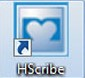
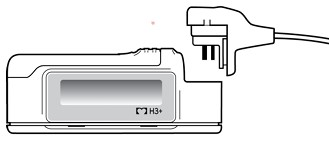

LOGIN TO THE HScribe SYSTEM

- Select the Hscribe desktop icon to launch the application.
- Enter your provided login credentials, if required.
PREPARING THE RECORDER: CONNECTING TO SYSTEM AND RECORDER STATUS

- Remove H3+ recorder battery before you connect the recorder to the USB cable.
- Connect the H3+ recorder to the white USB download cable.
- Select the Prepare Recorder/Card icon on the HScribe main menu.
- The recorder status, found on the upper portion on the page, should say Erased prior to preparing for a new patient.
PREPARING THE RECORDER: CONNECTING TO SYSTEM AND RECORDER STATUS
-
IF
NO
ORDER IS PRESENT:
- From within the Prepare Recorder/Card window:
- Select the Erase Recorder button to erase previously obtained data.
- The Search Patients tab is automatically selected.
- Search for existing patients in the database by entering patient name or MRN and clicking on the SEARCH button. When the correct patient is found, click on it and the information will auto-populate.
- If a patient is not found, enter patient information manually on the left panel (minimum recommendation is Last Name, First Name, ID or MRN, and Date of Birth).
- Set the recorder duration, which can be 24 or 48 hours.
- Click on Prepare Recorder/Card button located in the lower left portion of the tab.
- THe recorder status will no display Prepared and is now ready to be placed on a patient.
-
IF AN ORDER
IS
PRESENT:
- From within the Prepare Recorder/Card window:
- Select the Erase Recorder button to erase previously obtained data.
- Select the Exams tab.
- Select the patient from the displayed exams list. The patient information will auto-populate on the left panel.
- Set the recorder duration, which can be 24 or 48 hours.
- Click on Prepare Recorder/Card button located in the lower left portion of the tab.
- THe recorder status will no display Prepared and is now ready to be placed on a patient.